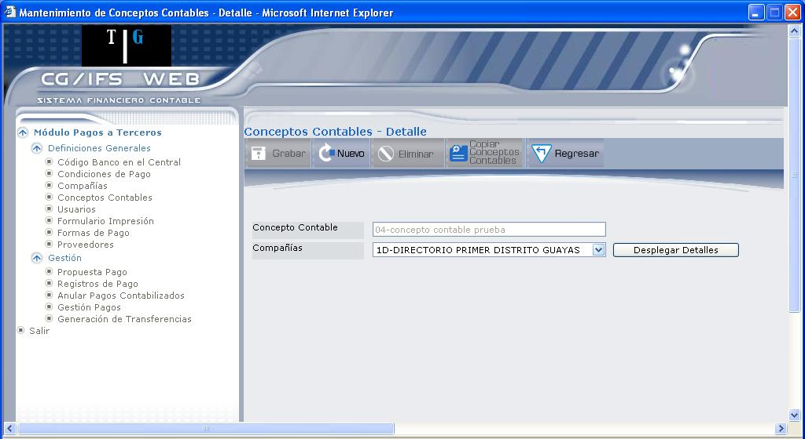

Conceptos Contables
Este proceso permite definir y clasificar las cuentas de mayor que se van a usar durante el proceso de pagos. Aquí se definen cuales son las cuentas de acreedores, las cuentas de bancos, las cuentas para registrar descuentos, etc., esta definición se puede hacer a nivel de compañías individuales. Las cuentas deben existir como cuentas de mayor válidas en el CG.
Al ingresar a esta opción se despliega la pantalla que muestra la Figura 3.16.
Figura 3. Conceptos Contables.
Esta pantalla despliega la lista de conceptos contables registrados; para consultar un concepto contable dé clic en el vínculo Select, que despliega la información como muestra la pantalla de la Figura 3.17.
Figura 3. Consulta de Conceptos Contables.
La descripción de cada campo y de los botones se explica en la pantalla NUEVO CONCEPTO CONTABLE de la Figura 3.18.
BOTON

Figura 3. Crear Nuevo Concepto Contable.
Concepto Contable:
Digite el código que se asigna al concepto contable.
Descripción Concepto:
Digite la descripción del concepto contable que desea registrar.
Tipo Concepto:
Seleccione el tipo de concepto que está registrando, los posibles son: B=Bancos, I=Impuestos, D=Descuento, T=Intereses. A continuación se define la utilización de cada uno de ellos.
- Las cuentas de banco son aquellas de las cuales se toma el dinero para pagar a los acreedores.
- Si cuando paga a algún proveedor éste le retiene el impuesto correspondiente, entonces debe definir la cuenta en la cual se va a registrar el impuesto retenido.
- Las cuentas de descuentos pueden ser ganados o no aprovechados, en el primer caso son aquellas en las que se registrará el importe ganado por descuentos. Si ningún proveedor le hace descuentos no hace falta indicar esta cuenta. Las cuentas de descuentos no aprovechados son aquellas en las que se registrará el descuento que no se pudo aprovechar. Estas son cuentas de orden que no afectan el balance de la empresa.
- Las cuentas de intereses de mora son aquellas en las que se registra el importe pagado a proveedores por intereses de moratoria. Si ningún proveedor le cobra intereses de mora no hace falta indicar este tipo de cuenta.
Tipo Movimiento:
Seleccione si el concepto contable se asigna a las Cuentas del “Debe” o el “Haber”.
Estado Registro:
Permite definir el estado del Concepto Contable, éste puede ser: “Activo” ó “Inactivo”.
A continuación presione el botón GRABAR, para registrar la información. Los datos de creación y/o actualización que se presentan en la parte inferior de la pantalla se pueden observar en la Figura 3.19.

Figura 3. Datos de Creación y/o Modificación.
Los datos de creación son datos fijos una vez que ha creado el registro y son los siguientes: Usuario que creó el concepto contable, Nombre de la Terminal, fecha y hora de creación.
Los datos de modificación irán variando cada vez que realice una actualización en el registro y son los siguientes: Usuario que realizó la última modificación, Nombre de la Terminal, Fecha y hora de modificación.
Al grabar se activa el botón DETALLE CONCEPTOS CONTABLES, que se explica a continuación.

Figura 3. Detalle de Conceptos Contables.
Compañía:
Se deberá especificar a cual compañía se le atribuye o se está relacionando la cuenta de mayor y/o la respectiva retención.
A continuación presione el botón DESPLEGAR DETALLES para consultar. Si desea ingresar un nuevo detalle presione el botón NUEVO, que se explica a continuación.
Figura 3. Ingreso de Conceptos Contables.
Cuenta de Mayor:
Presione el ícono ( ) para seleccionar la cuenta de mayor, que se desea definir, esta cuenta debe existir en el maestro de cuentas de mayor de CG y ser una cuenta de detalle.
) para seleccionar la cuenta de mayor, que se desea definir, esta cuenta debe existir en el maestro de cuentas de mayor de CG y ser una cuenta de detalle.
Cuenta Auxiliar:
Se utiliza cuando se desea usar la cuenta de mayor solamente con este auxiliar. Por ejemplo, si tiene definido un auxiliar "varios” y se quiere definir que ésta es la cuenta de proveedores ocasionales. Este campo es opcional.
Descripción Asiento:
Ingrese la descripción del asiento para contabilidad.
Los siguientes campos se despliegan dependiendo del Tipo de Concepto que haya seleccionado.
Código de Banco:
Este campo se utiliza para colocar las iniciales de cada banco, estas iniciales pueden ser de hasta tres caracteres. En el resto del módulo a las cuentas de banco se hace referencia por estas iniciales. Cada cuenta bancaria de la compañía debe tener un código de banco diferente. Este campo sólo aparece para las cuentas de banco.
Número Cuenta Bancaria:
Digite el número de cuenta bancaria. Este campo sólo aparece para las cuentas de banco.
Código de Retención:
Si al hacer pagos con esta cuenta se retiene un porcentaje de impuesto, entonces se debe colocar en este campo el código que identifica el tipo de impuesto que se está reteniendo al proveedor. Este código luego se graba en el campo "Reservado para Usuario" de CG. A continuación presione el botón GRABAR que confirma la grabación del registro, presentando un mensaje en la parte superior: “El registro ha sido guardado con éxito”
Presione el botón REGRESAR para volver a la pantalla anterior, en donde se presentan los detalles de los conceptos contables que haya ingresado, como se muestra en la Figura 3.22.
Figura 3. Listado de Detalles de Conceptos Contables.
Mediante el vínculo Select puede consultar el detalle del concepto contable, en donde también podrá observar el detalle de la creación y modificación del Detalle del Concepto Contable.
En esta pantalla el usuario podrá utilizar los siguientes botones:

Figura 3. Copiar Conceptos Contables.
Compañía:
Seleccione la compañía en la que se va a copiar los conceptos contables y presione el botón
Created with the Personal Edition of HelpNDoc: Full-featured EPub generator